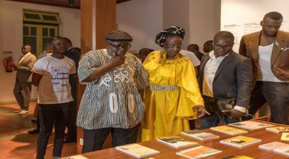
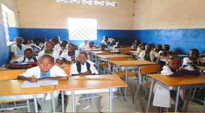

Destaque - Notícias


A LÍNGUA PORTUGUESA EM NÓS” PATENTE AO PÚBLICO EM LUANDA.
Vídeos do Seminário - Directo
Acompanhe em directo, apartir da nossa página, o Seminário da CPLP (Comunidade dos Países da Língua Portuguesa).
Academia Angolana de Letras contra ratificação do Acordo Ortográfico
Apesar da relevância da Língua Portuguesa como língua oficial e de escolaridade, em Angola, em coexistência com as Línguas Nacionais, a organização, na voz de um dos seus membros, Filipe Zau, que falava durante uma conferência de imprensa, diz ser necessário ter em conta a contribuição da origem da língua Bantu para a edificação da própria língua portuguesa e a importância das línguas nacionais como factor de identidade nacional, bem como da coexistência entre todas elas.
Ensino Especial com olhos na igualdade de direitos
Luanda - O Ministério da Educação (MED) promove, a partir de 2019, um conjunto de formação de professores apropriadas para o reforço do ensino especial orientando a inclusão escolar, de forma a viabilizar a sua aplicabilidade.
Da Literatura Tradicional Angolana à Literatura de Motivação Oral.
A União dos Escritores Angolanos e o Círculo de Estudos Literários e Linguísticos Litteragris apresentam, no dia 26 de Julho, a tradicional Maka a quarta-feira, subordinada ao tema «Da Literatura Tradicional Angolana à Literatura de Motivação Oral».
Concurso Literário “QUEM ME DERA SER ONDA”
No âmbito das actividades culturais que a União dos Escritores Angolanos realiza, vem, dessa vez promover na cidade de Ndalatando, província do Kuanza-Norte, o concurso literário "Quem Me Dera Ser Onda", um concurso destinado aos estudantes dos 13 aos 17 anos de idade, com o objectivo de impulsionar o gosto pela leitura a nível nacional, faremos a entrega dos prémios oficialmente aos três classificados e o lançamento das respectivas obras.
Curiosidades - Angola
A República de Angola é um país da costa ocidental da África. Sua língua oficial é o português, e idiomas nativos como o kikongo, chokwe e umbundo são consideradas línguas nacionais. O umbundo acrescentou muitas palavras ao português falado no Brasil, como "nenê", que significa "pedacinho", e "samba", adaptação de "semba".
Assim como o Brasil, Angola foi colonizada por portugueses, e compartilhamos com o país africano a língua, tradições religiosas e culturais...
→ download
A doação de presentes não faz parte da tradição cultural angolana. No entanto, é bem praticado nas áreas urbanas.
E quando você é convidado para a casa de um angolano para uma refeição, faz parte de boas maneiras, levar alguns presentes como frutas e chocolates para o anfitrião.
→ download
Devido ao aumento da produção de petróleo, a Angola tem uma das economias de mais rápido crescimento no mundo. O petróleo e os diamantes do país, são as suas principais fontes de rendimento. O país se tornou o maior fornecedor de petróleo da China.
One morning.
→ download